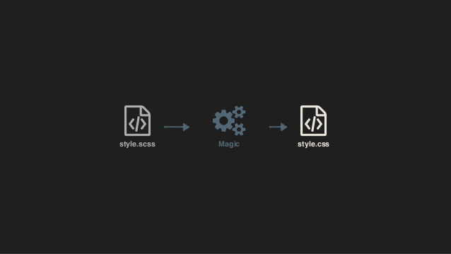

Препроцессоры
и
PostCSS
Agenda
- Препроцессоры
- Магия и препроцессоры
- Препроцессоры в дикой природе
- Доминирующие виды
- Чуть подробнее про Различия...
- PostCss Rex
- FAQ
Удивительный CSS

CSS pre-processor?
CSS pre-processor, meaning that it extends the CSS language, adding features that allow variables, mixins, functions and many other techniques that allow you to make CSS that is more maintainable, themable and extendable.
Основная цель: Упростить жизнь разработчика

Магия и препроцессоры
Чуть меньше магии...
Так вот оно что!

3 самых популярных
CSS-препроцессора

SASS
2007

LESS
2009

Stylus
2010

Популярность на момент хайпа (2016 год)

Какой выбрать?

На самом деле...
Любой!
Они все хороши!
В чем разница?
80/20
80% возможностей SASS, LESS и Stylus одинаковые,
20% отличаются.
Использование в разработке
Как собирать?

Вариант #1
Консолька!
- Sass
npm install -g sass sass source/stylesheets/index.scss build/stylesheets/index.css - Less
npm install -g less lessc styles.less styles.css - Stylus
npm install -g stylus stylus -w style.styl -o style.css
Вариант #2
Сборщики Grunt, Gulp, Webpack и т.п.


Вариант #3
Online
- CodePen
- JSFiddle
- Plunker
- ...
Синтаксис
LESS и SCSS
body {
background-color: #efefef;
font-size: 100% Helvetica, sans-serif;
}
SASS
body
background-color: #efefef
font-size: 100% Helvetica, sans-serif
Stylus
body
background-color #efefef
font-size 100% Helvetica, sans-serif
Stylus поддерживает все 3 синтаксиса
Схожие функции
- Переменные
- Вложенные селекторы
- Раскрытие импортов
- Вычисления
- Миксины
- Работа с цветом
- Условия и циклы
Переменные
Вложенные селекторы
Раскрытие импортов
@import

Вычисления

Миксины

extend

Циклы

@extend + Placeholder
SCSS
%borders {
border: 1px solid #efefef;
padding: 10px;
}
p {
@extend %borders;
font-size: 20px;
}
ul, ol {
@extend %borders;
text-transform: uppercase;
}
Stylus
%borders
border 1px solid #efefef
padding 10px
p
@extend %borders
font-size 20px
ul, ol
@extend %borders
text-transform uppercase
SCSS
%borders {
border: 1px solid #efefef;
padding: 10px;
}
p {
@extend %borders;
font-size: 20px;
}
ul, ol {
@extend %borders;
text-transform: uppercase;
}Stylus
%borders
border 1px solid #efefef
padding 10px
p
@extend %borders
font-size 20px
ul, ol
@extend %borders
text-transform uppercase
Функции
SCSS
$grid-columns: 12;
$grid-width: 960px;
@function calculate-column-width($cols) {
@return $grid-width / $grid-columns * $cols / $grid-width * 100%
}
#container {
margin: 0 auto;
width: 100%;
}
article {
float: left;
width: calculate-column-width(8);
}
aside {
float: right;
width: calculate-column-width(4);
}
LESS
@grid-columns: 12;
@grid-width: 960px;
.calculate-column-width(@cols) {
width: (((@grid-width / @grid-columns) * @cols / @grid-width) * 100%);
}
#container {
margin: 0 auto;
width: 100%;
}
article {
float: left;
.calculate-column-width(8);
}
aside {
float: right;
.calculate-column-width(4);
}
Stylus
grid-columns 12
grid-width 960px
calculate-column-width(cols)
((grid-width / grid-columns) * cols / grid-width) * 100%)
#container
margin 0 auto
width 100%
article
float left
width calculate-column-width(8)
aside
float right
width calculate-column-width(4)
CSS
#container {
margin: 0 auto;
width: 100%;
}
article {
float: left;
width: 66.66667%;
}
aside {
float: right;
width: 33.33333%;
}
Работа с цветом

Media Queries
SCSS
$small-breakpoint: 480px;
$medium-breakpoint: 768px;
$large-breakpoint: 1024px;
aside {
width: 100%;
@media (min-width: $small-breakpoint) {
width: 100px;
float: right;
}
@media (min-width: $medium-breakpoint) {
width: 200px;
}
@media (min-width: $large-breakpoint) {
width: 400px;
}
}
Less
@small-breakpoint: 480px;
@medium-breakpoint: 768px;
@large-breakpoint: 1024px;
aside {
width: 100%;
@media (min-width: @small-breakpoint) {
width: 100px;
float: right;
}
@media (min-width: @medium-breakpoint) {
width: 200px;
}
@media (min-width: @large-breakpoint) {
width: 400px;
}
}
Stylus
ll-breakpoint 480px
medium-breakpoint 768px
large-breakpoint 1024px
aside
width 100%
@media (min-width small-breakpoint)
width 100px
float right
@media (min-width medium-breakpoint)
width 200px
@media (min-width large-breakpoint)
width 400px
CSS
aside {
width: 100%;
}
@media (min-width: 480px) {
aside {
width: 100px;
float: right;
}
}
@media (min-width: 768px) {
aside {
width: 200px;
}
}
@media (min-width: 1024px) {
aside {
width: 400px;
}
}
@content – Sass
=respond-to($name)
@if $name == small-screen
@media (min-width: 320px)
@content
@if $name == large-screen
@media (min-width: 960px)
@content
aside
width: 25%
+respond-to(small-screen)
width: 100%
@content – Scss
@mixin respond-to($name) {
@if $name == small-screen {
@media (min-width: 320px) {
@content;
}
}
@if $name == large-screen {
@media (min-width: 960px) {
@content;
}
}
}
aside {
width: 25%;
@include respond-to(small-screen) {
width: 100%;
}
}
css
aside {
width: 25%;
}
@media (min-width: 320px) {
aside {
width: 100%;
}
}
Hash map
SCSS
$icons: (
home: e601,
about: e602,
services: e603
);
@each $icon-name, $icon-keycode in $icons {
.icon-#{$icon-name} {
&:before {
content: "#{$icon-keycode}";
}
}
}
SASS
$icons: (home: e601, about: e602, services: e603)
// запись с столбик вызовет ошибку
@each $icon-name, $icon-keycode in $icons
.icon-#{$icon-name}
&:before
content: #{$icon-keycode}
STYLUS
icons = {
home: e601,
about: e602,
services: e603
}
for icon-name, icon-keycode in icons {
.icon-{icon-name} {
&:before {
icon-keycode = "" + icon-keycode + "";
content: icon-keycode;
}
}
}
CSS
.icon-home:before {
content: "\e601";
}
.icon-about:before {
content: "\e602";
}
.icon-services:before {
content: "\e603";
}
Минусы препроцессоров
Ваш код нельзя запускать в браузере без процессинга
.accordion {
$accordion-header-color: $primary-color;
$accordion-padding: 1em;
@extend %module;
@include transition(all 0.3s ease-out);
background: $accordion-header-color;
padding: $accordion-padding;
}
Иногда могут все усложнять
&__moon{
& .forecast-extra-info__logo {
background: url('../img/moon_states.png') no-repeat;
}
@for $i from 0 through 30 {
&_#{$i} .forecast-extra-info__logo {
background-position: $i*(-58px) 0;
}
}
}
PostCSS

PostCSS
с 2013
Как устроен PostCSS?

Что можно делать с помощью PostCSS?
- Полифиллы
- Поддержка старых браузеров
- Расширения языка
- Оптимизация
- Синтаксический сахар
- Аналитика
более 90 плагинов
Вы всегда можете написать плагин сами!
Использование
var postcss = require('postcss');
postcss([
require('autoprefixer'),
require('stylelint')({
syntax: 'scss'
})
])
.process(css)
.then(result => console.log(result.css))
Думаете это все?..

Мжно даже так

Теперь все!
Ссылки:
-
EPAM Systems
-
Mariia Tarasiuk
- Mariia_Tarasiuk@epam.com